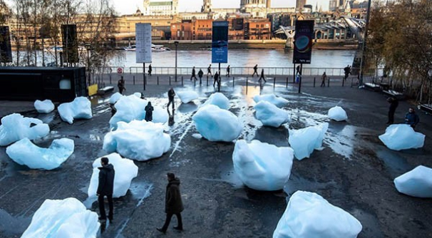
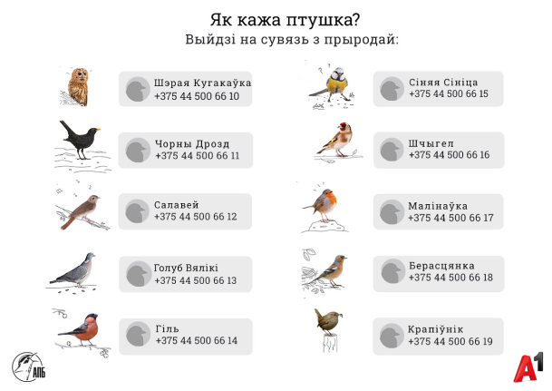

ESG
 22 ноября 2021
22 ноября 2021
О проблемах экологии твердят везде и всюду. И пока учёные приводят научные факты и обоснования, деятели искусства придумывают способы, как донести до людей свои мысли и идеи через творчество.
1. «Замороженные цветы» (Азума Макото, Япония)
Для инсталляции «Замороженные цветы» автор использовал старый ангар, ледяные блоки для 16 букетов.
Композиция показывает проблему уничтожения окружающей среды: красоту природы, ее увядание, характерное для всего живого.
2. «Ледяные часы» (Олафур Элиассон, Дания)

Художник напрямую столкнул жителей Лондона с хрупкостью нашей природы и ответственностью, которую мы несем. Тающий лёд можно даже потрогать, чтобы лучше представить себе нынешнюю экологическую ситуацию.
3. «Там, где приливы и отливы» (Педро Марцорати, Аргентина)
Инсталляция «Там, где приливы и отливы» сделана в парижском парке Монсури: группа синих людей помещена в пруд.
Так автор напоминает о проблеме глобального потепления.
4. «Выйди на связь с природой» (А1, Беларусь)

Беларусь стала первой страной в мире, где у птиц появились персональные телефонные номера. Общественная организация «Ахова птушак Бацькаўшчыны» (AПБ) и компания А1 предлагают людям выйти на связь с природой в буквальном смысле.
Чтобы услышать пение птиц, достаточно просто позвонить по специальным номерам.